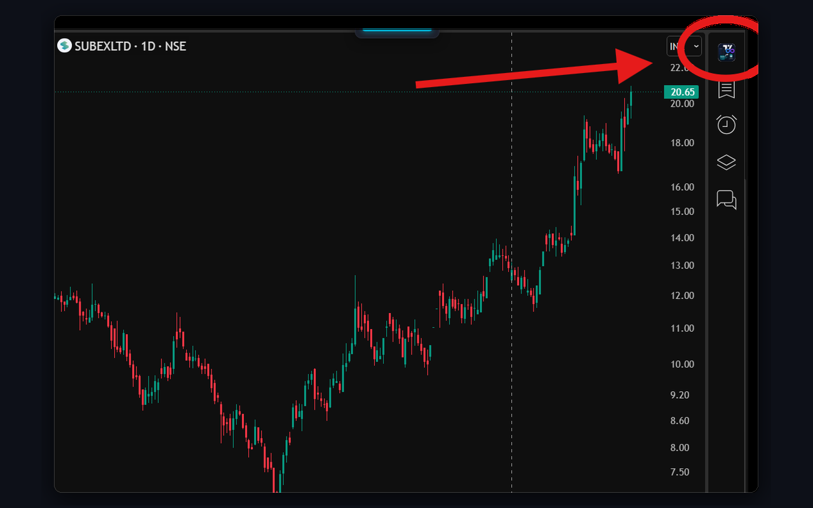
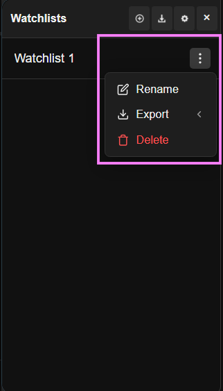
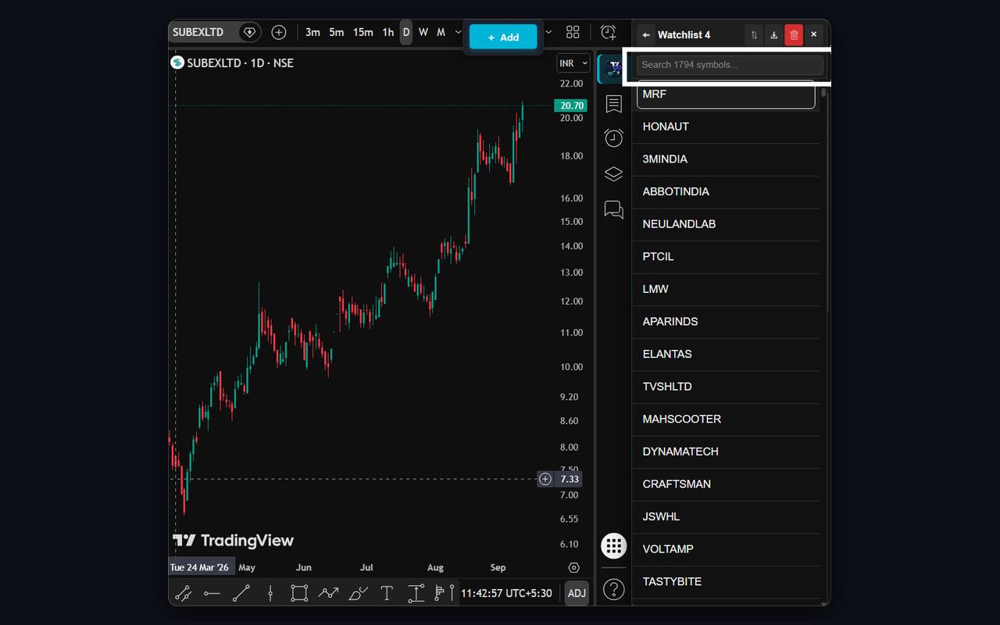

Home › Tutorial & Video Guide
 Simple Step-by-Step Guide • Free Extension
Simple Step-by-Step Guide • Free Extension
How to Use Unlimited Watchlists
for TradingView.
Learn how to use Unlimited Watchlists in just a few minutes. Create as many lists as you need, import stocks from Chartink or CSV files, and switch charts fast using your keyboard.
Quick Video Tutorial
Watch this 1-minute video to see all the main features in action.
Opening the Extension
Pin the extension in Chrome and open it on your TradingView chart.
Pin the Extension to Chrome Toolbar
Keep the extension icon visible so you can open it with one click anytime.
Click the Puzzle Icon
Click the puzzle icon in the top-right corner of Google Chrome to see your installed extensions.
Find Unlimited Watchlists
Find Unlimited Watchlists for TradingView in the list and click the pin icon (shown in blue below).
Always Ready in Toolbar
The dark-red logo will now stay in your browser toolbar, ready whenever you need it.


Open on TradingView Charts
Access your watchlists directly while looking at your chart.

Button on TradingView's Right Bar
When you open tradingview.com/chart/, a new watchlist button appears at the top of TradingView's right toolbar.
One Click to Open or Close
Click this icon to open the watchlist panel on the right. Click it again anytime to close it.
Resize or Close the Panel
Easily adjust the panel width or close it when you need a full chart view.
Close Button (×)
Click the × button at the top-right of the panel to close it and see your full chart.
Drag to Resize
Move your mouse over the left border of the panel. Click and drag left or right to make it wider or narrower.
Chrome Side Panel
You can also click the pinned extension icon in your Chrome toolbar to open the watchlist in Chrome's side panel.

Creating & Managing Watchlists
Make as many watchlists as you want with no limits.
Create a New Watchlist
Add a new watchlist in two simple steps.

Click the (+) Button
In the top header of the watchlist panel, click the (+) button.
Type a Name
Type any name you like (for example: "Breakout Stocks", "Nifty 50", or "Crypto") and press Enter.
Drag to Change Order
Click and drag any watchlist up or down to place your most important lists at the top.
Rename, Export, or Delete
Easily manage each watchlist from its 3-dot menu.
Click the 3 Dots (⋮)
Move your mouse over any watchlist row and click the 3 dots on the right to see options.
Rename Watchlist
Change the name anytime. All your saved stocks, color tags, and notes stay completely safe.
Export to CSV or TXT
Hover over Export to download all your stock symbols as a CSV file or plain text file.
Delete Watchlist
Remove watchlists you no longer need with a confirmation check so you don't delete by accident.


Switch Lists Quickly (No Back Button Needed)
Jump directly between watchlists with one click.

Click the Watchlist Title
When viewing stocks in any list, click the title at the top. A dropdown appears showing all your watchlists and their stock count.
Search or Click Any List
Type to search or click any list to switch right away. You do not need to click the back button!
Or Use Arrow Keys
Press → Right Arrow for the next watchlist or ← Left Arrow for the previous watchlist. Your open chart stays untouched!
Adding Stocks & 1-Click Chartink Import
Easily import scan results from Chartink directly into TradingView.
1-Click Import from Chartink.com
A button on Chartink automatically imports all scanned stocks for you.

Open Your Screener on Chartink
Go to any scan on chartink.com/screener/ and run your scan.
Click "Import to Watchlist"
You will see a blue "Import to Watchlist" button right above the results table. Click it once.
All Stocks Imported Instantly
The extension reads all stocks across all pages and creates a new watchlist inside TradingView using your scan's name.
1-Click Re-Sync (Refresh Daily Scans)
Update your scan results every day without opening Chartink again.
Saved Screener Link
Every watchlist imported from Chartink automatically remembers where it came from.
Click Re-Sync Every Morning
Click the round ↻ Re-Sync button next to the watchlist. It immediately pulls today's new stocks in seconds.

Import CSV Files & Add from Chart
Upload stock files from your broker or save the chart you are looking at.


Import from CSV or TXT
Click the Import button at the top header and select your file. Works with files from Zerodha, Groww, AngelOne, or Excel.
+ Add Button on Chart
Studying a chart? Click the + Add button on your chart toolbar to quickly save that stock into your active watchlist.
Fast Charting & Keyboard Shortcuts
Flip through charts in seconds without touching your mouse.


Keyboard Shortcuts
Use these simple keys on your chart to move fast:
- Space or ↓ Down Arrow: Open next stock on chart.
- Shift + Space or ↑ Up Arrow: Open previous stock on chart.
- → Right Arrow: Switch to next watchlist.
- ← Left Arrow: Switch to previous watchlist.
- Enter: Open the chart for the selected stock.
- Alt + W: Open or close the watchlist side panel.
Hold 1,800+ Stocks Per List
Free TradingView limits you to 30 stocks. With this extension, you can keep thousands of stocks in a single list with instant search.
Instant Chart Loading (No Page Refresh)
Click any stock to open its chart immediately without refreshing the page. All your drawings and indicators stay right where they are.
Color Tags, Notes & Backup
Tag your setups with colors, save notes, and back up all your data.
Color Tags & Quick Notes
Right-click any stock to pick a color dot (Green, Blue, Yellow, Purple, Red, Cyan) and add a quick trade note (like "Buy above 450").
Dark Mode & Default Market
Open Settings to choose Dark or Light mode. Select your stock exchange (NSE, BSE, NASDAQ, NYSE, Crypto) so stock names open on the right exchange.
Backup & Restore Your Lists
Click "Backup All Data" to download a backup file of all your watchlists, tags, and notes. Click "Restore Data" anytime to restore them.


Keyboard Shortcuts Cheatsheet
Quick reference for all keyboard shortcuts and mouse clicks.
| Action | Key / Click | What it does |
|---|---|---|
| Next Stock | Space or ↓ (Down Arrow) | Opens the next stock on your chart |
| Previous Stock | ↑ (Up Arrow) or Shift + Space | Opens the previous stock on your chart |
| Next Watchlist | → (Right Arrow) | Switches to your next watchlist (chart stays open) |
| Previous Watchlist | ← (Left Arrow) | Switches to your previous watchlist (chart stays open) |
| Open Stock Chart | Enter | Opens the chart for the selected stock |
| Open / Close Panel | Alt + W | Opens or closes the watchlist side panel on TradingView |
| Switch Stock Chart | Left Click | Click any stock name to load its chart instantly |
| Color Tag or Note | Right Click | Right-click any stock to set a color tag or note |
| Resize Panel Width | Drag Border | Drag the left border to make the panel wider or narrower |
| Change List Order | Drag & Drop | Drag watchlists or stocks up and down to change order |
| Close Side Panel | × Close | Click the close button at top right to hide the panel |
Ready to Trade Without Limits?
Install the free Chrome extension and start organizing your TradingView watchlists today.
Add to Chrome — 100% Free